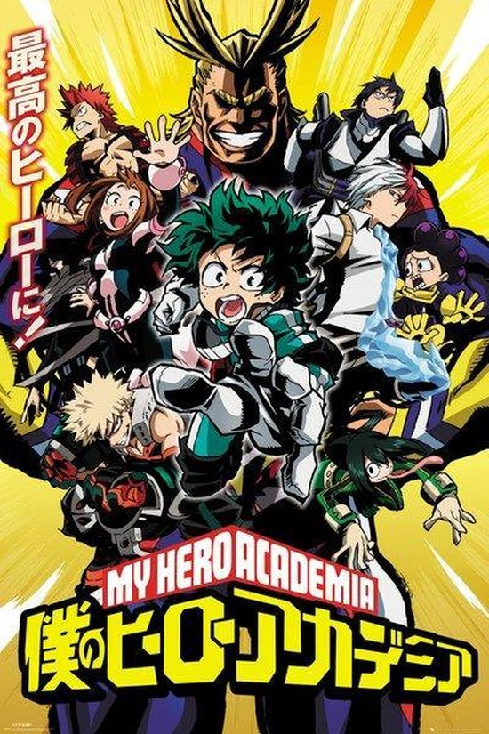

Op een dood normale schooldag vindt de uitzonderlijk intelligente leerling Light Yagami een speciaal boek, Death Note. In het boek staat dat een persoon doodgaat als je zijn naam in het boek schrijft. Light besluit om ALLE criminelen te doden om de wereld een betere plek te maken, met Light als God. Na aankomst bij zijn huis, sprint Light naar zijn kamer om zijn doel te bereiken, de God van de Nieuwe Wereld worden. Als hij aan zijn bureau gaat zitten klinkt er een harde donder knal en plots verschijnt Ryuk, een Shinigami, Light schrikt zich rot. Hij komt erachter dat de Death Note aan Ryuk toebehoort. Ryuk besluit om Light te helpen om zijn doel te bereiken, maar de daden van Light gaan niet ongestraft. De politie komt achter deze mysterieuze daden en besluit om de beste detective in te schakelen, L. L is een zeer mysterieuze man die zichzelf heel geheim houdt: zijn echte naam is niet bekend en mensen weten niet hoe hij eruit ziet. De anime veranderd al snel in een kat en muis spel tussen Light en L. Zal Light zijn doel behalen, of zou L hem toch achterhalen ?
De heerser van Ishikawa, Kagemitsu Daigo, maakt een deal met 12 Demonen om meer kracht en geld te krijgen, inruil voor zijn eerst geboren kind. Als het eerst gebore kind wordt geboren, is hij een baby met een lichaam en een schedel: geen armen, geen benen en geen huid op zijn hoofd. Iedereen schrikt van de baby en er wordt besloten om hem weg te laten drijven in de rivier. De baby wordt gevonden door een blinde reiziger genaamd Biwamaru. De baby krijgt de naam Hyakkimaru. Om zijn lichaamsdelen terug te krijgen moet hij de demonen verslaan. In de anime gaat hij op reis om alle demonen te verslaan.

De jonge Izuku Midoriya droomt van jongs af aan al van een superheld worden, in de wereld waar 80% van de bevolking superkrachten heeft, maar Midoriya wordt geboren zonder krachten en moet daarom zijn droom opgeven. Totdat hij iemand ontmoet, die zijn superkracht aan Midoriya geeft. Midoriya moet veel trainen om de kracht eigen te maken. Samen met zijn superheld vrienden beleeft hij veel avonturen en vecht hij tegen veel schurken.
Haruki Shiga heeft weinig vrienden en heeft daar ook geen interesse in, totdat hij per toeval Sakura Yamauchi tegenkomt in het ziekenhuis en haar boek leest. Hij komt erachter dat ze heel ziek is en binnenkort dood gaat. Sakura besluit vrienden te wroden met Haruki ook al wil hij dat liever niet, hij wil haar ook niet teleurstellen. Ze spreken steeds vaker met elkaar af en gaan dan samen een weekendje weg, na afloop zegt Haruki dat hij genoten heeft. Haruki en Sakura maken eer samen nog een leuke tijd van, wetende dat Sakura dood gaat.
Ze leven in een maatschappij binnen muren, ze worden in bescherming genomen tegen de Titans, die mensen opeten. Ze leefden eerst in veiligheid, totdat de Collosal Titan de muren doorbrak en de Titans binnenstroomden. De moeder van Eren Jaeger, Carla Jaeger, werd door een Titan opgegeten. Eren wil wraak nemen door alle Titans te doodden. Samen met Mikasa Ackermann en Armin Arlert sluit hij zich aan bij de Survey Corps, waar hij snel bevriend wordt met de anderen, maar zijn ze wel allemaal te vertrouwen ? Of zitten er spionnen in de Survey Corps ?